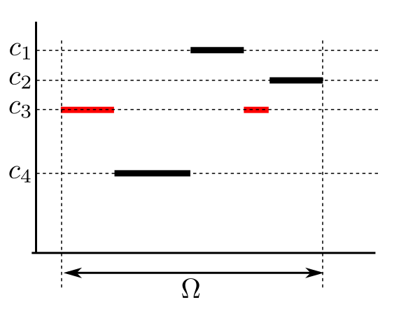
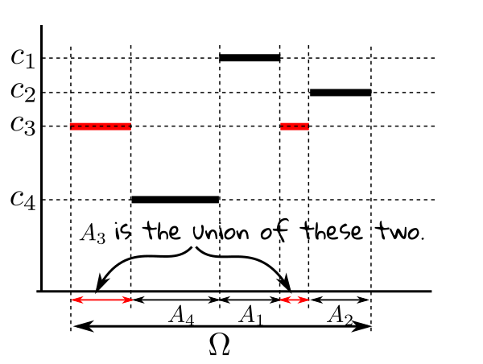
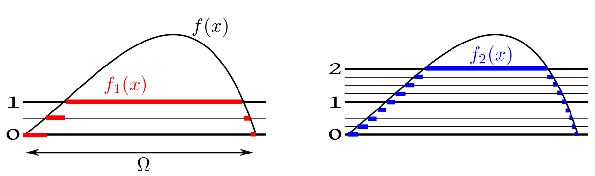

We often talk about the "size" of different sets. There are various ways to measure the size, length, area, volume, mass,
cardinality. All these measures share some common properties: they are defined over subsets of
some universal set (e.g., length for subsets of ${\mathbb R},$ while area for subsets of
${\mathbb R}^2$), they are always nonnegative
and they add up over disjoint sets.
Let $\Omega$ be our universal set. Let $\calP(\Omega)$ be its power set. Then $\mu:\calP(\Omega)\rightarrow[0,\infty)$
is called a measure if for disjoint $A_1,A_2,...\in\calP(\Omega)$ we have $\mu(\cup A_i) = \sum \mu(A_i).$
This definition has a couple of problems. First, if we think of "length" for $\Oemga={\mathbb R},$
then surely we would like to say that "length" of ${\mathbb R}$ is $\infty.$ But our
definition needs finite length for every subset of ${\mathbb R}.$ So we have to include
$\infty$ in the range of $\mu.$ This will not cause any problem with the countable
additivity condition, since we are not working with both $\infty$ and $-\infty.$ So
addition is still well-defined, as $\forall a\in{\mathbb R}~~a+\infty = \infty+a = \infty$ and
$\infty + \infty= \infty.$
The second problem is more subtle. Sometimes we want the measure to satisfy additional "nice" conditions.
Often we find that no measure with those "nice" conditions exists. If, however, we define it only for a subcollection of
subsets of $\Omega,$ then the problem goes away. The subcollection must of course be rich enough to allow interesting
mathematical manipulations. So we want a subcollection that is closed under countable union, intrsection and complementation.
Any such subcollection is called a $\sigma$-algebra.
So we get the final definition of measure.
Notice that the conditions in this definition are much like the probability axioms, except that there we had one extra conditions
$P(\Omega)=1.$ This shows that probability is a measure. However, a measure $\mu$ need not have $\mu(\Omega)$
equal to $1.$ It could be any finite positive number or even $\infty.$ If $\mu(\Omega)< \infty,$ we naturally
call $\mu$ a finite measure. These are generally easier to work with. Infinite measres are harder to
deal. But there is an useful intermediate type of measure that allows $\mu(\Omega)=\infty$ and yet retains much of
the advantages of a finite measure. These are what we work with most of the time. Th definition goes like this.
EXERCISE 1: Show that for any measure $\mu(\phi)=0.$
How do we construct a measure? Typically we start with some subsets of $\Omega$ for which the value is obvious. Then
we use the countable additivity to define it for less obvious sets. Let's do it for "length". We all agree that the length
of $(a,b)$ is $b-a$ for $a<b.$ Then what should the length of $(0,1)\cup
(3,5)$ be? The answer is $1+2=3.$ Even less obvious is the length of ${\mathbb Q}.$ It
turns out to be $0+0+\cdots=0$ and so the length of ${\mathbb Q}^c$ must be $\infty.$
Can we do this for all subsets? Or may we run into some difficulty? The answer is very heartening:
If you have enough "obvious" cases, and there is no inconsistency
among them, then you may extend them uniquely. This is formalised as a famous theorem:
We shall not prove this in this course. But let us understand the significance of the conditions. The first condition is
clearly necessary. If $\mu$ already fails to be nonnegative or countably additive on $\calF$ how can we expect
it to be a measure when extended to $\calB?$ If we specify $\mu$ for each and every set in $\calB,$ then
of course it would suffice. But that woluld be too much work. Our aim is to specify $\mu$ for only a smaller number
of the sets. Clearly, we cannot fall below a generating set. So that condition puts a lower bound on how low we can go.
But that lower bound is actually too low, as not all generating collection would do. It must be "rich" enough. If you specify
$\mu$ on $A$ and $B,$ then you should also specify it for $A\cap B,$ to help determine how much
$A,B$ overlap each other. Also, for each $A$ we should be able to express $A^c$ as a finite union of sets
for which $\mu$ has been specified. This will help us to place $A$ in the background of $\Omega.$
This for example, shows that we may define "length" for all subsets in $\calB.$
EXAMPLE 1:
Show that there is a unique measure $\mu$ on $({\mathbb R},\calB)$ such that
$\mu(\phi)=0$ and $\forall a < b~~\mu\big( (a,b) \big) = b-a$
SOLUTION:
Here the obvious specification is given for open intervals and the empty subset of ${\mathbb R}.$
Now, the intersection of two
open intervals is either an open interval or $\phi.$ So the first cndition of Caratheordory extension is met.
■
We have already seen last semester that for an uncountable $\Omega$ we may not always be able
to define a function $P:{\mathcal P}(\Omega)\rightarrow[0,1]$
satisfying all the probability axioms. Please see this page
from the last semester to brush up on this.
Hence we defined $\sigma$-algebra. While the simplest $\sigma$-algebras are the trivial one and the entire power
set, the most commonly used is the Borel $\sigma$-algebra.
Closely related to this is the idea of a measurable function.
Let $(\Omega_1,\calF_1)$ and $(\Omega_2,\calF_2)$ be measurable spaces. Then a function $f:\Omega_1\rightarrow\Omega_2$
is called measurable if
$$\forall B\in\calF_2~~f ^{-1} (B)\in \calF_1.$$
The most common application of this our course is when $(\Omega,\calF,P)$ is a probability
space (i.e., a random experiment) and $X:\Omega\rightarrow{\mathbb R}$ is a random variable. Here we take
$(\Omega_1,\calF_1) = (\Omega,\calF)$ and $(\Omega_2,\calF_2) = ({\mathbb R},\calB),$ where
$\calB$ is the Borel sigma-field on ${\mathbb R}.$
We need the measurability condition on $X$ so that we can talk about $P(X\in (a,b)).$ For this we need
$\{w\in\Omega~:~X(w)\in (a,b)\}\equiv X ^{-1} (a,b)\in \calF.$
While defining $E(X)$ we had proceeded in three steps: simple, non-negative and general.
Let us quickly recall what we did.
If we visualise $\Omega$ as an interval, a simple random variable is "somewhat like" a step function:

Both the red steps have the same height.
Note, however, that the same value may give rise to multiple steps of the same height.
Indeed, there may be infinitely many "steps" of the same height! For instance, the function
$$f(x) =\left\{\begin{array}{ll}1&\text{if }x\in{\mathbb Q}\cap[0,1]\\ 0&\text{otherwise.}\end{array}\right. $$
is a simple function on $[0,1].$ This is of course not a step function (with finitely many steps).
We can express a simple function mathematically using indicator functions. Let a simple function take only the values $c_1,...,c_k$
(all distinct). Let $A_i = \{\omega\in\Omega~:~f(\omega) = c_i\}.$ For instance, for the simple function shown above,
we have the following $A_i$'s.

Clearly the $A_i$'s partition $\Omega$.
The $A_i$'s need not always be just finite union of intervals. For example, in case of the Dirichlet function, we have
just two $A_i$'s, one is ${\mathbb Q}\cap [0,1]$ and the other ${\mathbb Q}^c\cap [0,1].$ However, we always have only
finitely many $A_i$'s. We can now write the simple function as
$$f(\omega) = \sum_{i=1}^k c_i\ind_{A_i}(\omega).$$
So far we have not talked about measurability. It should be easy to check that $f$ is measureable if and only if $\forall i~~A_i\in\calF.$
We took a supremum in the
second step. This is motivated by the following result.
Proof:
For $n\in{\mathbb N}$ and $\omega\in\Omega$ we define $S_n$ as follows. First partition
$[0,\infty)$ into $2$ intervals $[0,n)$ and $[n,\infty)$ and then
subdivide the first into equal subintervals of length $2^{-n}.$ So you get $N=n2^n+1$ subintervals in all. Call
these $[a_1,b_1),...,[a_N,b_N).$ These constitute a partition of $[0,\infty).$
Now set $S_n(\omega) = a_k$ if $X_n(\omega) \in[ a_k,b_k).$
The following picture shows this process for $n=1$ and $n=2.$

Notice how the subdivisions for $n=2$ fit into those for $n=1.$
For each $\omega\in\Omega$ and for each $n\in{\mathbb N}$ we have $S_n(\omega)\leq S_{n+1}(\omega).$
If $S_n(\omega) = a$ and $S_{n+1}(\omega) = b,$ then $X(\omega)\in[a+2^{-n})$ and also $X(\omega)\in[b+2^{-n-1}).$
So, by the contruction of the partitions, $[b+2^{-n-1})\subseteq[a,2^{-n}).$
Thus, $a\leq b,$ as required.
Again, for each $\omega\in\Omega$ we have $S_n(\omega)\rightarrow X(\omega).$
$\forall \omega\in\Omega~~\forall \epsilon>0~~\exists M\in{\mathbb N}~~\forall n\geq M ~~|X(\omega)-S_n(\omega)| < \epsilon.$
$\forall \omega$
Take any $\omega\in\Omega.$
$\forall \epsilon$
Take any $\epsilon>0.$
$\exists M$
Choose $M\in{\mathbb N}$ such that $M> f(\omega)$ and $2^{-M} < \epsilon.$ (Possible since ${\mathbb N}$
is unbounded above and $2^{-n}\rightarrow 0$ as $n\rightarrow \infty.$
EXERCISE 2:
Show that the convergence is uniform if $f$ is bounded.
EXERCISE 3:
Show that if, in the theorem above, $f$ is measurable (w.r.t. any given $\sigma$-field $\calF$
over $\Omega$ and the Borel $\sigma$-field over ${\mathbb R}$), then so must be each $f_n.$
Since $f_n$ can take only finitely many value, it is enough (why?) to show that for any $a\in{\mathbb R}$ the set $f_n
^{-1}\{a\}\in\calF.$
Express $f_n ^{-1}\{a\}$ as $f ^{-1}$(some set).
Proof:
Shall show
Target
$\forall \epsilon>0~~\exists N\in{\mathbb N}~~\forall n\geq N~~ E(X_n)> E(X)-\epsilon.$
This will complete the proof, since anyway $(E(X_n))$ is a non-decreasing sequence bounded from above by $E(X)$
(The case $E(X)=\infty$ is trivially
included in it).
Since $E(X) = \sup\{E(Z)~:~ Z\leq X,~~Z \mbox{ simple}\},$
hence $\exists$ simple $ Z\leq X$ with $E(Z) > E(X)-\epsilon.$
Fix some $\delta>0.$
Let $A_n =\{X_n > Z-\delta\}.$
Then $P(A_n)\rightarrow 1.$
Since $X_n$'s are non-decreasing, hence $A_1\subseteq A_2\subseteq A_3\subseteq\cdots.$
Also since $\forall\omega\in\Omega~~X_n(w)\uparrow X(w),$ hence $\cup_n A_n=\Omega.$
So $E(X_n)\geq E(X_n\ind_{A_n}) \geq E(Z\ind_{A_n}) \geq E(Z)-MP(A_n^c)-\delta,$
where $M = \max Z.$
Taking limit $\lim E(X_n) \geq Z- \delta.$
Since $\delta>0$ is arbitrary, we have $\lim E(X_n) \geq E(Z).$
[QED]
We had stated last semester that if $X,Y$ are two jointly distributed random variables with expectations, and $a,b\in{\mathbb R}$
are any two numbers, then $aX+bY$ is also a random variable with expectation, and $E(aX+bY) = aE(X)+bE(Y).$
First we show that $E(X+Y) = E(X)+E(Y)$ in three steps.
Step 1: Show this when $X,Y$ are simple random variables. We have already done this last semester.
Step 2: Show this for non-negative $X,Y.$ Let $(S_n)$ and $(T_n)$ be simplifications for $X$
and $Y,$ respectively. Then $(S_n+T_n)$ is a simplification for $X+Y.$
Also $E(S_n+T_n) = E(S_n)+E(T_n).$ Te result now follows on taking limit of both sides.
Step 3: Show this for general $X,Y.$ Here we apply step 2 to $X_+, X_-, Y_+$ and $Y_-.$
Then we show that for $a>0$ we have $E(aX) = E(X).$ This proof also proceeds in three steps (left as an exercise).
Finally, we show $E(-X)= -E(X).$ Let $Y = -X.$ Then $Y_+ = X_-$ and $Y_- = X_+.$ So $E(Y) = E(Y_+)-E(Y_-) = E(X_-)-E(X_+) = -E(X).$
We have defined $E(X)$ in three steps: simple, non-negative and general. But we have given a computational formula
only in case of simple random variables. If $X$ takes countably infinite values, $x_1,x_2,...$ with probabilities
$p_1,p_2,...,$ respectively, then we have mentioned that $E(X) = \sum_n x_n p_n$ if this sum is absolutely convergent.
This formula actually follows from the general definition, as we now show.
Proof:
To show
$$\sum p_i x_i = \sup\{E(U)~:~U\mbox{ simple, }U\leq X\}.$$
Let $L= \sum_i p_i x_i,$ and ${\mathcal D}=\{E(U)~:~U\mbox{ simple, }U\leq X\}.$
This requires showing two things:
$L$ is an upper bound of ${\mathcal D},$
no number less than $L$ is an upper bound of ${\mathcal D}.$
Step 1: To show
$$\forall U\in{\mathcal D}~~E(U)\leq L.$$
Take any $U\in{\mathcal D}$ be any simple random variable.
Let $U$ take only the values $u_1,...,u_k.$
Let $p_{ij} = P(X=x_i, U=u_j).$
Then $E(U) =\sum_j (u_j \sum_i p_{ij}) = \sum_j\sum_i u_j p_{ij}.$
Also $L = \sum_i x_i \sum_j
p_{ij}=\sum_i \sum_j x_i p_{ij}=\sum_j \sum_i x_i p_{ij}.$
A finite sum can always be interchanged with an infinite sum, when the summands are all nonnegative. For example,
$$\sum (a_n+b_n) = \sum a_n + \sum b_n.$$
If we write $c_{1,n}=a_n$ and $ c_{2,n}=b_n$ then this is
$$\sum_n \sum_i c_{i,n} = \sum_i \sum_n c_{i,n}.$$
Now $p_{ij}>0\Rightarrow u_j\leq x_i.$
Hence $\sum_i u_j p_{ij}\leq \sum_i x_i p_{ij},$ and so $\sum_j\sum_i u_j p_{ij}\leq \sum_j\sum_i x_i p_{ij}.$
Thus, $E(U)\leq L,$ as required.
Step 2: Shall show that no $L'< L$ is an upper bound of ${\mathcal D},$ i.e.,
$$\forall L'< L~~\exists U\in{\mathcal D}~~E(U)> L'.$$
Let $U_n$ be the random variable
$$
U_n =\left\{\begin{array}{ll}X&\text{if }X=x_1,...,x_n\\ 0&\text{otherwise.}\end{array}\right..
$$
Then $U_n$ is a simple random variable such that $U_n\leq X.$
So $U_n\in{\mathcal D}.$
Also $E(U_n)
=\sum_{i=1}^n p_i x_i\rightarrow L.$
Hence $\exists N\in{\mathbb N}~~E(U_N) > L'.$
Choose this $U_N$ as our $U\in{\mathcal D}.$
Since $E(U) > L',$ this completes the proof.
[QED]
::
EXERCISE 4: If $X$ takes the values $x_1,x_2,...$ (not necessarily all nonnegative) with probabilities
$p_1,p_2,...$ where $\sum p_i = 1$ and $\sum |p_i x_i|<\infty,$ then
$$E(X) = \sum p_i x_i.$$
::
EXERCISE 5: If $X$ takes the values $x_1,x_2,...$ (not necessarily all nonnegative) with probabilities
$p_1,p_2,...$ where $\sum p_i = 1$ and $\sum |p_i x_i|=\infty,$ then what are the possibilities for $E(X):$
finite, $\infty$, $-\infty$ or undefined? Give one example of each of the possibilities. Prove the impossibility
of the other(s).
If a function is Riemann integrable (proper or improper), then it is also Lebesgue integrable, and the two integrals match. Indeed,
that is why we could use Riemann integraion to compute expectation in the absolutely continuous case.
Riemann integration is defined in terms of step function with finitely many steps. Lebesgue integral is defined in terms of
simple functions. Now any step function with finitelt many steps is also a simple function, though the converse is not true
in general. For instance the function $f:(0,1)\rightarrow{\mathbb R}$ defined by $f(x)=\left\{\begin{array}{ll}1&\text{if }x\in{\mathbb Q}\cap(0,1)\\ 0&\text{otherwise.}\end{array}\right.$ is
a simple function, but not s step function with finitely many steps.
Thus, Lebesgue integrals may be expected to be more powerful than Riemann integrals.
Proof:
Let $S$ be the collection of all steps functions with finitely many steps defined on $[a,b].$
Let $T$ be the collection of all simple functions defined on $[a,b].$
Since $f$ is Riemann integrable, its
lower and upper integrals match:
$$\sup\{\area(s)~:~s\in S~s\leq f\} = \inf\{\area(s)~:~s\in S~s\geq f\}=R,\mbox{ say.}$$
Since $f$ is Riemann integrable, hence it is bounded. Also it can be approximated by simple
functions. So it is measurable.
Now
$\{\area(s)~:~s\in T~s\leq f\}$ is a bounded nonempty set. So $f$ is Lebesgue
integrable over $[a,b].$ The value of the Lebesgue integral is the supremum, $L$, say.
Shall show $L=R.$
Since $S\subseteq T,$ hence $$\{\area(s)~:~s\in S~s\leq f\} \subseteq \{\area(s)~:~s\in T~s\leq f\}.$$
So $L\geq R.$
Now, $\forall s\in S$ with $s\geq f,$ and $\forall t\in T$ with $t\leq f,$ we have
$t\leq s$ and so $\int t \leq \int s=\area(s).$
Taking sup over $t$ and inf over $s$, we see that $L\leq R.$
So $L = R.$
[QED]
Proof:
We already have $\int_a^{a+n} f(x)\, dx = \int_{[a,a+n]}f.$
Let $I_n$ be the common value. Then $(I_n)$ is a nondecreasing sequence. So the limit exists (may be $\infty$).
By definition of improper Riemann integral, $I_n\rightarrow \int_a^\infty f(x)\,dx.$
Again, by MCT $I_n\rightarrow \int_{[a,\infty)} f.$
Hence the result.
[QED]
We have $Z_{n,k} \leq Y_k.$
Taking limit as $k\rightarrow \infty,$ we have $X_n\leq \lim_k Y_k.$
Now taking limit as $n\rightarrow \infty,$ we have $X\leq \lim_k Y_k.$
Also we have $Y_n\leq X_n\leq X.$ So $\lim_k Y_k\leq X.$
Hence $\lim_k Y_k= X.$
This completes the proof.
[QED]
EXERCISE 6:
If $(X_n)$ is a nonincreasing sequence of nonnegative random variables converging to some random variable $X,$
and $E(X_1)<\infty,$ then show that $E(X_n)\downarrow E(X).$ What if the assumption $E(X_1)<\infty$ is
dropped?
EXERCISE 7:
Suppose that $X_n$'s are nonnegative random variables. Show that
$$E(\sum_1^\infty X_n) = \sum_1^\infty E(X_n).$$
In the simple version we assumed that the limit of $(X_n)$ is a random variable. In particular, we assumed that for
each $\omega\in\Omega$ the sequence $(X_n(\omega))$ converges to some real number. We may actually drop these
assumptions. We may allow $(X_n(\omega))$ to diverge. Then the limit $X(\omega)$ is a function from $\Omega$
to $[0,\infty].$ One can then show (not assume) that this $X$ is a random variable. We do this
below.
Proof:
The proof is somewhat long. But it may be split into a number of well-motivated steps.
Step 1: Here we shall show that $X$ is a random variable.
We need to show that $\forall B\in \calB~~X ^{-1}(B)\in\calF.$
Since $\calB$ is generated by $\{(-\infty, t]~:~t\in{\mathbb R}\},$ hence enough to show
$\forall t\in{\mathbb R}~~X ^{-1} ((-\infty,t])\in\calF,$ i.e.,
$$\forall t\in{\mathbb R}~~\{X\leq t\}\in\calF.$$
But $\{X\leq t\} = \cap_n \{X_n\leq t\}.$
Since $X_n$'s are random variables, hence $\forall n~~\{X_n\leq t\}\in\calF.$
Again, since $\calF$ is closed under countable intersection, $\cap_n\{X_n\leq t\}\in\calF,$ completing step
1.
Step 2: Here we shall show $\lim_n E(X_n) \leq E(X).$
But $(E(X_n))$ being a non-decreasing sequence, $\lim_n E(X_n) = \sup \{E(X_n)~:~n\in{\mathbb N}\}.$
Again, since $X$ is a random variable (which is clearly nonnegative, since
$X_n$'s are), $E(X)$
exists (may be $\infty$).
Since $\forall n\in{\mathbb N}~~X_n\leq X,$ hence $E(X_n)\leq E(X).$ So $\sup \{E(X_n)~:~n\in{\mathbb N}\}\leq E(X).$
Hence $\lim_n E(X_n) \leq E(X).$
Step 3: Here we shall show $\lim_n E(X_n) \geq E(X).$
We know that $E(X) = \sup\{E(S)~:~S\in \calD\},$ where $\calD = $ the set of all
non-negative simple functions "strictly below"
$X.$
Pick any $S\in \calD.$
Our plan is to say ''Some $X_n$ must exceed $S.$ '' But since we are dealing with
functions, we have to be careful.
Let $B_n = \{\omega\in\Omega~:~X_n(\omega) > S(\omega)\}.$
Then $E(S\ind_{B_n})\leq E(X_n\ind_{B_n})\leq E(X_n).$
Our plan is to take limit over $n$ and claim that $E(S\ind_{B_n})\uparrow E(S).$
Then $B_n\subseteq B_{n+1}.$
Clearly, $\cup_n B_n \subseteq\Omega.$
Take any $\omega\in\Omega.$
Since $X_n(\omega)\uparrow X(\omega), $ and $S(\omega) < X(\omega),$ hence $\exists n\in{\mathbb N} ~~X_n(\omega) > S(\omega).$
So $\omega\in B_n.$
Hence, by continuity of probability, $E(S \ind_{B_n})\uparrow E(S).$
Let $S = \sum_1^r c_k \ind_{A_k}.$
Then $E(S\ind_{B_n}) = \sum_1^r c_k E(\ind_{A_k}\ind_{B_n}) = \sum_1^r c_k E(\ind_{A_k\cap B_n})=\sum_1^r c_k P(A_k\cap B_n).$
But $\lim_n(A_k\cap B_n) = A_k.$
Hence, by continuity of probability, $\lim_n P(A_k\cap B_n) = P(A_k).$
So we are now able to execute our plan, taking limit over $n$ of $E(S\ind_{B_n})\leq E(X_n)$
to get $E(S)\leq \lim E(X_n). $
But since this holds for all $S$ strictly less than $X,$ hence $E(X)\leq \lim_n E(X_n),$
completing the proof.
[QED]
We had talked about the fundamental theorem of probability in the last semester: for any CDF there is a random variable with
that CDF. Indeed, this is the therem that powers every statement of the form "Let $X$ be a random variable with a
given distribution."
We had given a partial proof earlier in this course: We assumed the existence of a random variable with the $Unif(0,1)$
distribution, and provided a way to manufacture random variables following any given distribution using this.
So the only thing that remains to be checked is the existence of $Unif(0,1)$ random variables.
For this we take $\Omega = (0,1)$ and $X:\Omega\rightarrow{\mathbb R}$ as $X(\omega)=\omega.$ We take the Borel $\sigma$-field
on $\Omega.$ Need to show the existence of $P:\calB\rightarrow[0,1]$ such that $\forall a<b\in(0,1)~~P(a,b) = b-a.$
For this we shall use a technical result called Caratheodory extension, which we shall not prove in this course.
Thanks to this result, we do not have to work with the entire $\calB.$ Instead, we shall choose a convenient $\calF$
such that $\calB = \sigma(\calF).$
One such convenient $\calF$ is the collection of finite, disjoint unions of intervals in $[0,1].$ Some typical
members are $(0,1),$ $(0,0.1]\cup [0.4,0.6).$ Since the union of two overlapping
intervals is again an interval, it is not difficult to see that this $\calF$ is an algebra.
We define $\mu$ over this as follows:
$$\mu\left(\cup_1^n I_k) = \sum_1^n (b_k-a_k),$$
where $I_k$'s are disjoint open/closed/semiopen intervals with end points $a_k$ and $b_k.$
To see countable additivity, we take disjoint $A_1,A_2,...\in\calF.$ As each $A_n$ is a disjoint union of
intervals inside $(0,1),$ hence $\cup A_n$ is a countable union of disjoint intervals, $I_1,I_2,...$
Let $m_i =\mu(I_i).$
Since $m_i\geq 0$ we ge the result by rearrangement.
The unique Caratheodory extension of this is our required $Unif(0,1)$ probability.